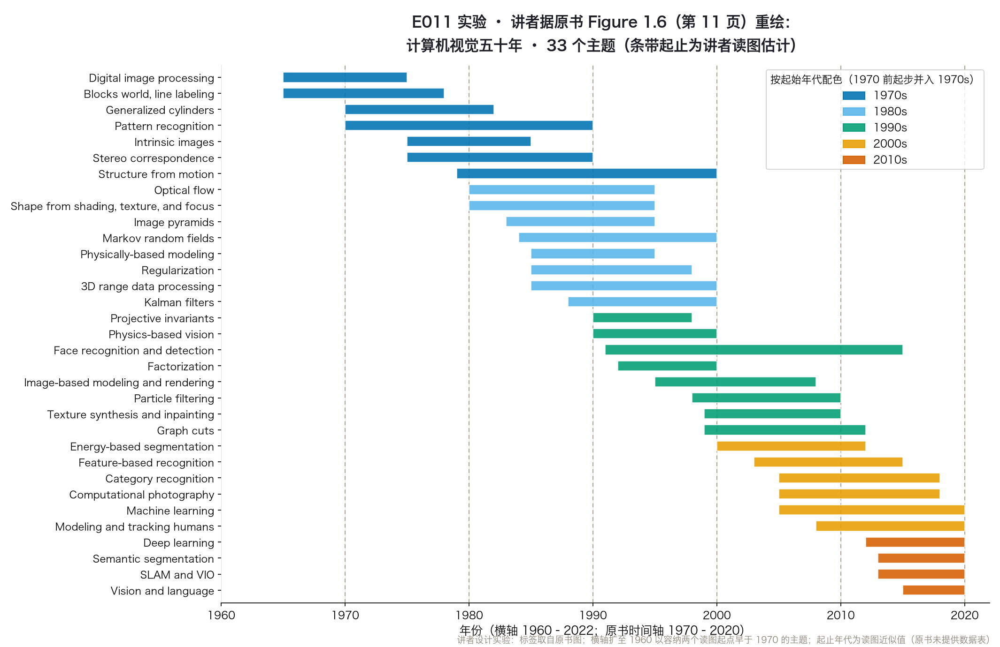

正课 · 03 · 第 1 章 绪论
计算机视觉五十年简史
从方块世界到大模型时代 · 含讲者前瞻
四段：① 七十年代起步 ② 八十年代数学化 + 九十年代重建与图形联姻 ③ 两千年代特征与学习 ④ 一零年代海啸
起点 · THE SUMMER OF 1966
「花一个暑假，让电脑描述它看到的」
1966 · 夏
MIT 的明斯基给本科生萨斯曼布置了一个暑期任务据一则流传很广的故事：把相机连上电脑，让它描述看到的东西（Boden 2006 第 781 页 · 转引自第 11 页）
结局
这个问题，远比一个夏天难原书脚注：备忘录实际作者是帕普特，动用了一整批学生（第 11 页）
当时的一些先驱相信：解决「视觉输入」，只是通往推理与规划路上顺手的一步——讲者按：正是这个误判，定义了这个领域的起点。
地图 · TIMELINE
五十年，三十三个主题一张图

据原书 Figure 1.6（第 11 页）重绘 · 条带起止为讲者读图估计 · 横轴 1960–2022（原书 1970–2020）· 代码实跑输出
1970s · THE BEGINNING
初心：从图像恢复三维结构
宏大议程
视觉感知，是「模拟人类智能」议程的一环持此议程的先驱，如 MIT、斯坦福、CMU（第 11 页）
分野
与数字图像处理的区别视觉要恢复三维世界结构，走向完整场景理解（原书第 11 页）
讲者按：这个初心，贯穿了后面五十年的每一章。
1970s · BLOCKS WORLD
方块世界：给棱线贴标签
最早的场景理解：从线条的拓扑结构推断多面体的三维结构——线段标注算法（原书第 12 页 · Figure 1.7a）。「凹、凸、遮挡」的标注类别为讲者补充背景。
非多面体物体用广义圆柱拼——旋转体与扫掠闭合曲线的组合（Figure 1.7c）；这种「零件弹性排布」得名图画结构（Fischler and Elschlager 1973）——三十多年后的识别算法仍在用这个名字（第 19 页）。
1970s · TWO TRACKS
两条线并进：定性 + 定量
内在图像
把明暗变化解释成表面朝向与阴影的成像效应Barrow and Tenenbaum 1981 · 马尔 2½-D 草图（第 12 页）
定量路线
第一批特征立体匹配与强度光流还有 3D 结构 + 相机运动的开端（第 13 页）
立体、光流、结构与运动，第 9、11、12 章都会回来（章号见第 13、16–17 页）。
1970s · MARR'S LEVELS
“
计算理论 · 表示与算法 · 硬件实现——马尔的三个层次，今天框定问题依然好用。
David Marr (1982) 信息处理系统三层次；原书作者评价（转述）：as good a guide today as it was 25 years ago（第 13 页）· 讲者推测：此句或沿用原书早期版本的措辞；自 1982 年起算至 2021 年成书已近四十年
1980s · MATH
八十年代：数学化
金字塔
融合 + 由粗到细scale-space · 小波接踵（§3.5）
从 X 恢复形状
明暗 · 光度立体 · 纹理 · 焦点§13.1（原书第 14 页）
Canny
边缘检测 + 蛇形曲线snakes（原书第 14–15 页）
物理模型
三维 physically based modelsFigure 1.8d（第 14 页）
八十年代的主旋律：为定量的图像与场景分析，发展更精细的数学技术（原书第 13 页）。
1980s · UNIFICATION
更深的发现：统一
正则化
很多可统一、至少可描述于同一变分框架§4.2（原书第 15 页）
MRF
同样可用离散 MRF 表述 + 模拟退火Geman and Geman 1984 · §4.3（第 15 页）
Kalman
在线更新不确定性Matthies, Kanade, and Szeliski 1989（第 15 页）
讲者注：第 4 章正则化与 MRF 两节（§4.2–4.3）的源头就在这十年（依据：第 15 页指向 §4.2/§4.3）。
1990s · 3D RECONSTRUCTION
从运动恢复结构
投影不变量的热潮，演变成对「从运动恢复结构」的集体攻关：不需要标定的投影重建，与在正交近似下解得飞快的因子分解法（Tomasi and Kanade 1992）同时推进，随后走向全局优化。
大家后来发现：这就是摄影测量学传统的光束法平差（bundle adjustment）。全自动三维建模系统由此诞生——直到 2010 年代初，都还有新系统问世（原书第 15–16 页）。
1990s · MANY FRONTS
同期的四条战线
图割
稠密立体或许最大突破global optimization（第 17 页；Figure 1.9b 见第 16 页）
分割
归一化割 · 均值漂移Shi and Malik 2000（第 17 页）
特征脸
统计学习起步eigenfaces（第 17 页 · §5.2.3）
联姻图形
变形 · 插值 · 拼接 · 光场image-based rendering（第 17–18 页）
十年间或许最重要的变化：与计算机图形学的深度联姻（原书第 16–18 页）。
2000s · COMPUTATIONAL PHOTOGRAPHY
改名计算摄影
数据驱动与学习方法成为核心。前一十年的那套技术——图像拼接、光场采集、包围曝光合成高动态范围——被重新命名为计算摄影：越来越多地用于日常数码摄影；色调映射、纹理合成、图像修补也归入这个门类（原书第 18–19 页）。
两条趋势：特征加学习做识别（星座模型）；图割之后置信传播再提速全局优化。最显著的趋势——机器学习大举进入视觉（原书第 19–20 页）。讲者按：海啸之前，先是涨潮。
2010s · DEEP LEARNING TSUNAMI
2012：AlexNet 时刻
大标注数据集的浪潮变成海啸，以 ImageNet、微软 COCO、LVIS 为代表——既提供评测指标，更提供发展完整机器学习方案所需的足量标注数据（原书第 20–21 页）。
突破点是 2012 年的 SuperVision（"AlexNet"）：第一个赢得 ImageNet 挑战的神经网络，靠 GPU 训练。此后深度卷积架构狂奔——如今是识别与语义分割唯一被考虑的架构，光流、去噪、单目深度推断也以它为首选（原书第 21 页）。
2010s · DEPLOYMENT
落地：从客厅到天空
Kinect
2010 发布的深度相机3D 建模 + 人体跟踪（第 21 页）
手机计算摄影
全景 · HDR · 弱光降噪 · 光场虚化全景、HDR 已成标配；弱光降噪、光场虚化正在普及（第 21 页）
SLAM / VIO
实时三维地图无人机森林自主飞行（第 22 页）
原书总结：难以置信的进步，一部分来自机器学习与大规模真实数据；广泛使用本身，也带来新挑战（第 22 页）。
讲者前瞻 · BEYOND §1.2
时间线的下一格
讲者注：过去几年，视觉正从专用任务走向通用基础模型——这段历史还在书写。
讲者归纳 · FOUR LESSONS
五十年的四个启示
- 「一个夏天」的乐观换来五十多年的深水区——低估问题难度是常态
- 问题分析与约束，必须和高效鲁棒的算法联姻——原书作者信条（第 13 页）· 讲者注：马尔的哲学至 2021 年成书已近四十年，依然适用
- 范式会被数据与算力改写——2010 年代的海啸（第 20–21 页）
- 老想法会复兴——如 2005、2012 年的内在图像（第 13 页）
动手 · CODE
实验：亲手重绘时间线
①
取标签人工誊录 Figure 1.6 的 33 个主题标签
讲者设计实验：原书没给数据表——条带起止是读图估计，已在图上标注。
实验结果 · OUTPUT
五十年，一眼看尽
据原书 Figure 1.6（第 11 页）重绘 · 条带起止为讲者读图估计 · 最早在上 · 断言 17/17 全过
讲者归纳 · RECAP
带走三句话
- 五十年是一部「从图像恢复三维结构、走向完整场景理解」初心的展开史——数学在换，初心没变
- 范式被数据与算力改写：2012 年 AlexNet 之后，深度学习接管识别
- 历史是最好的地图——讲者按：时间线上多数主题，后面都有章节展开
NEXT · 回书指路
读原书§1.2 历史（原书第 10–22 页），对照 Figure 1.6 时间线（第 11 页）读
作业从时间线挑三个主题，翻回正文找它们首现的年代与页码
下一集E012 本书地图：三大模块、章节依赖与符号约定（§1.3–1.6）